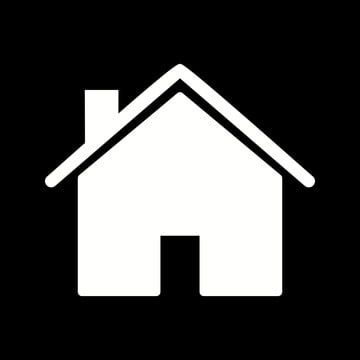
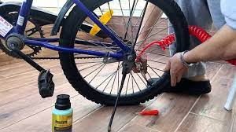

על עצמנו

דף הבית

הוראות בטיחות לרכיבה על אופניים
אז אתה נוסע לך במורד הרחוב, ולפתע אתה מתחיל לקלוט שמשהו אינו כשורה, אופס… פנצ’ר! אתה עוצר את הרכב במקום בטוח לעצירה (כלומר, במקום עם שוליים רחבים ולא מיד אחרי פנייה, ובמקום שכל רכב מגיע יוכל לראות אותך מרחוק). ועכשיו אחרי שהחלפת לצמיג הרזרבי, הגיע הזמן להמשיך לשלב הבא, והוא: למצוא פנצ’רמאכר שאתה סומך עליו, ולתקן את הצמיג. ואז, מגיע שלב, שבו שואלים אותך –באיזה תיקון אתה מעוניין: ובשלב הזה, אנחנו (בצוות של חצב צמיגים) מקווים מאוד שהתשובה שלך היא לא: “הזול ביותר” או “המהיר ביותר”. תיקון הצמיג הוא החלטה חשובה מאוד בכל הנוגע לבטיחות הרכב והנסיעה בו, ולכן חשוב להיות מודע להבדלים בין התיקונים השונים של הפנצ’ר. ישנם שלושה סוגים עיקריים של תיקון צמיגים : שיטת הפלאג / שיטת המדבקה / שיטת הפלאג והמדבקה.
פלאג פשוט הננעץ במקום של החור בצמיג – ממלא את הנקב עם חומר כלשהו כדי להפוך את האוויר בצמיג לחזק מבחוץ. זוהי הדרך המהירה ביותר והזולה ביותר. אף על פי שתיקון הפנצ’ר חותם את הנקב מבחוץ, הוא אינו מבטיח שהחלק הפנימי של הנקב בצמיג ייסגר, ובכך מותיר פוטנציאל סביר שהאוויר “יזלוג” מהפנימית לתוך המעטפת של הצמיג ואפילו החוצה. כמו כן, כאשר נעשה תיקון פנצ’ר בשיטה זו, פנימית הצמיג לא נבחנת כלל, ומשמעות הדבר היא שיכולה להיות בעיה נסתרת נוספת, שאינך מודע אליה.
תיקון באמצעות מדבקה הוא הצעד הבא בסולם תיקוני הפנצ’רים. בשיטה זו נבדק הצמיג מבפנים; הדבר חשוב ביותר, מפני שיכול להיות נזק נוסף בתוך הצמיג, שלא ניתן לראות במבט מבחוץ. הבעיה עם תיקון בשיטת המדבקה היא כי למרות שהצמיג חוזר להיות חזק מבפנים, שיטת המדבקה איננה ממלאה את הנקב מבחוץ. משמעות הדבר היא שיש פוטנציאל שכל פסולת קטנה, או אפילו לחות תיכנס אל תוך הנקב. חתיכת הלכלוך שנכנסה מסוגלת ללחוץ על המדבקה ולהחליש אותה, והלחות יכולה לגרום לחלודה בחלקי הפלדה הפנימים של הצמיג.
השלב הגבוה ביותר בתיקוני פנצ’רים בצמיג הוא שילוב בין פלאג ומדבקה. תיקון זה משלב את הטוב משני העולמות; הצמיג מוסר מן החישוק ונבדק, ומכיוון שהודבקה מדבקה הצמיג חזק מפנים, ובאמצעות הפלאג – אנחנו מוודאים שלא יוכלו להיכנס חתיכות לכלוך פנימה, ואף לא תהיה חדירה של לחות אל פנים הצמיג.
כולל 33 יחידות ערכת כלים לתיקון שסתומי צמיגי רכב, 1 כלי מחט, 15 רצועות תיקון, 1 יחידה חותך כבלים אחד, 1 צבת אף מחט, 1 מד לחץ צמיגים, 1 יחידה מחבר מהיר מתנפח לרכב, 10 יחידות מסמרים קטנים לתיקון צמיגי ואקום, 10 יחידות מסמרים גדולים לתיקון צמיגי ואקום, 1 מברג, 2 כפפות נגד החלקה (צבע של הכפפות אקראיות), תיק אחסון אחד.
עמיד לטמפרטורה ובלאי - הציפורניים לתיקון צמיגים בשירות עצמי שלנו עשויות מחומר גומי איכותי, עמיד בפני טמפרטורה גבוהה או שחיקה, יכול לתקן את הצמיגים שלכם ביציבות מבלי לשבור את הצמיגים.
שיטות פשוטות לשימוש - מסמרי צמיגי ואקום לרכב אלה קלים לתפעול ולהתקנה, אתם יכולים פשוט לתקן את הצמיג שלכם בעצמכם, לחסוך זמן ואנרגיה.
אפקט איטום טוב - מסמרים לתיקון צמיגי אופנוע לרכב יכולים להידבק לצמיג שלכם בצורה מאובטחת, עם חוזק חיבור טוב ואפקט איטום, הם יכולים למנוע מהמים להיכנס לחלק השבור.
יישומים נרחבים - ברגי ציפורניים לתיקון אלה מתאימים לא רק לצמיגי משאיות, צמיגי רכב שטח וצמיגי פיקאפ, אלא גם ניתנים ליישום על צמיגי אוטובוסים, צמיגי אופנוע, צמיגים חקלאיים, צמיגי תלת אופן וכלי רכב אחרים.
תלחצו על התמונה ותקנו את המוצר
שלב 1: בדוק את רפידות הבלמים השלב הראשון בתיקון הבלמים של האופניים שלך הוא לבדוק את רפידות הבלמים. ודא שרפידות הבלמים תקינות ואינן בלויות. אם רפידות הבלמים בלויות, החלף אותן בחדשות.
שלב 2: כוונן את כבלי הבלמים השלב הבא הוא להתאים את כבלי הבלמים. ודא שכבלי הבלמים מכוונים כהלכה ואינם רופפים מדי או הדוקים מדי. ניתן לכוונן את כבלי הבלמים על ידי שחרור או הידוק כוונון הכבל.
שלב 3: בדוק את ידיות הבלמים השלב האחרון הוא לבדוק את ידיות הבלמים. ודאו כי ידיות הבלמים תקינות ואינן בלויות. אם ידיות הבלמים בלויות, החליפו אותן בחדשות.
רפידות בלמים מתבלות אחת מבעיות הבלמים הנפוצות ביותר של אופניים היא שחיקה של רפידות הבלמים. זה יכול לקרות אם רפידות הבלמים לא מוחלפות באופן קבוע. אם רפידות הבלמים בלויות, החלף אותן בחדשות.
מתיחה של כבלי בלם בעיה נפוצה נוספת של בלמים לאופניים היא מתיחה של כבלי בלמים. זה יכול לקרות אם כבלי הבלמים אינם מותאמים באופן קבוע. אם כבלי הבלמים מתוחים, התאם אותם למתח המתאים.
ידיות בלם מתבלות בעיית בלימי האופניים השכיחה האחרונה היא שחיקה של ידיות הבלמים. זה יכול לקרות אם ידיות הבלמים לא מוחלפות באופן קבוע. אם ידיות הבלמים בלויות, החליפו אותן בחדשות.
כדי למנוע בעיות בלמים לאופניים, חשוב לבדוק באופן קבוע ולתחזק את בלמי האופניים שלך. הקפד לבדוק את רפידות הבלמים, כבלי הבלמים ומנופי הבלמים באופן קבוע ולהחליף אותם בעת הצורך. חשוב גם להתאים את כבלי הבלמים למתח המתאים.
הערכה כוללת 4 רפידות בלמים קרמיות ושני רוטורים לבלמים לביצועים - ערכת בלמים זו כוללת את כל מה שאתם צריכים בשביל עבודה מלאה לבלמים.
פחות חום חיי בלם ארוכים יותר - רוטור הבלמים הקדוחים של הארט יאוורר גזים חמים ממשטח הרפידה, ויפחית את העברת החום בין הרפידה לרוטור. זה מאפשר לבלמים שלך להישאר קרירים יותר בתנאים קיצוניים מבלי להתפשר על הביצועים.
הפחיתו את מרחק העצירה שלכם - החריצים יוצרים נשיכת רפידה חזקה יותר, מפחיתים את מרחק העצירה שלכם ומספקים לכם כוח בלימה ברמה הטובה ביותר.
בלימה שקטה - רפידות בלמי הארט נועדו להפחית רעש ורעידות. רפידות הבלמים מצופות כדי למנוע רעש וספיגת רטט, מה שנותן לך נסיעה חלקה ושקטה יותר.
התקנה קלה: ערכות בלם הארט מגיעות עם כל החומרה הדרושה להתקנה ללא טרחה.
כאשר נתקלים בשרשרת שנקרעה או שהתעקמה, רוכבי אופניים יש להם מספר אפשרויות לתיקון, בהתאם למצבם:
תיקון השרשרת בלעדי חיבור מהיר
משוך את הפין באופן כמעט מוחלט מאחד הקצוות כדי ליצור חלק פנימי וחלק חיצוני של השרשרת. הסר את הקצוות הפגומים כדי ליצור מצב שבו יש חלק פנימי שלם וחלק עם הפין. חבר את קצוות השרשרת על ידי התאמת הזכר והנקבה. השתמש בכלי תיקון שרשרת כדי להכניס את הפין חלקית, ולהשאיר חלק קטן בתוך השרשרת. נכנס לכלי תיקון את הפין חלקית, ובדוק את התיקון לאחר מכן.
תיקון השרשרת עם חיבור מהיר:
השתמש בחיבור מהיר המורכב משני חלקים המנעילים אחד על השני. התקן חיבור מהיר אחד בכל קצה של השרשרת, ווודא שהם ננעלים באופן מאובטח. בדוק את הכוונת והפעלת השרשרת לאחר התיקון.
בשני השיטות, חשוב להחליף את התיקון הזמני בפין או בחיבור מהיר חדש בהזדמנות הכי מהרה, מכיוון שהחלק שתוקנו עשוי להיות נקודה חלשה בשרשרת